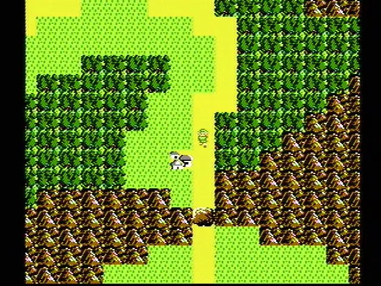
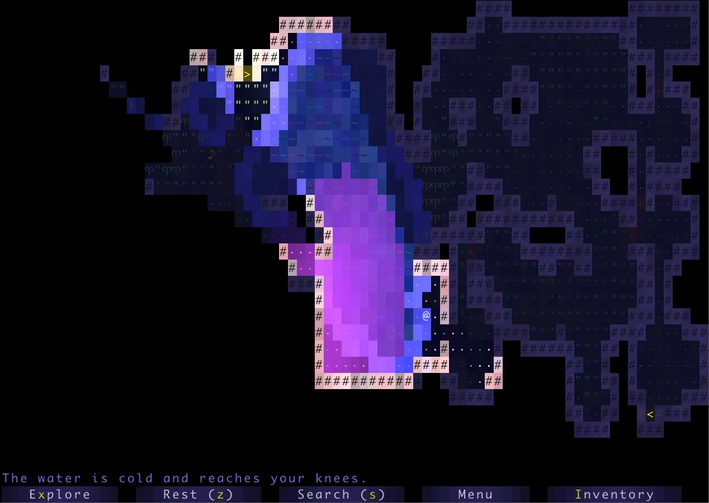
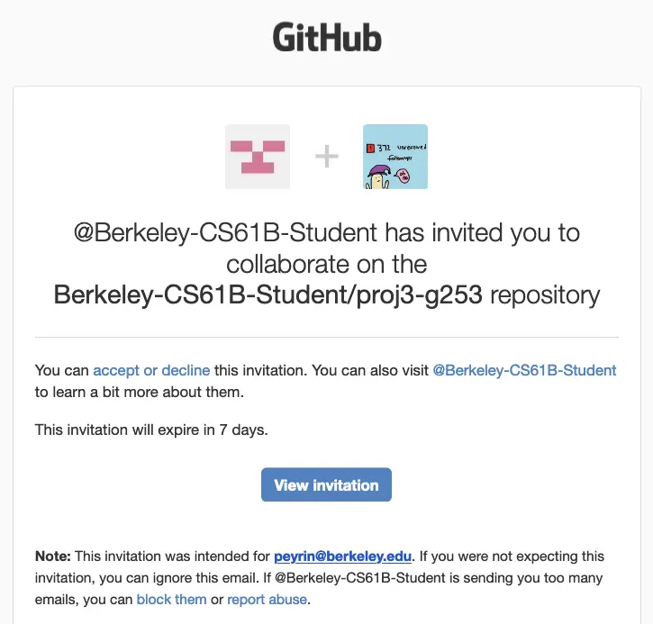
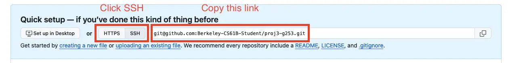
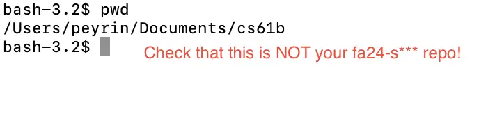

Deadlines
| Assignment | Tasks | Deliverable | Points | Due Date |
|---|---|---|---|---|
| Project 5A | - Partnerships - Setup - Design Document |
Pre-Project Google Form | 5 | Mon, Nov 17 11:59pm PT |
| Design Document | 20 | |||
| Project 5B | - World Generation | World Screenshots on Gradescope | 20 | Mon, Nov 24 11:59pm PT |
| Project 5C | - Task 1: Main Menu - Task 2: Interactivity - Task 3: HUD - Task 4: Saving and Loading - Task 5: Ambition Features |
Code on Gradescope (0 pts, but required for checkoff) |
0 | Mon, Dec 1 11:59pm PT |
| Live Checkoff with TA (Checkoffs will happen 12/01 – 12/05) |
150 | |||
| Post-Project Google Form | 5 |
Project 5: BYOW
Welcome
In this project, you will create an engine for generating explorable worlds. This is a large design project that will require you and one partner to work through every stage of development from ideation to presentation. The goal of this project is to teach you how to handle a larger piece of code with little starter code in the hopes of emulating something like a product development cycle. In accordance with this, the grading of this project will be different from other projects. Since there is no notion of “the correct answer” when it comes to world design and implementation, you will be assessed much like a performance review you might receive at an internship or job in addition to a very general autograder. While this means you will be graded slightly subjectively, we promise to be pretty nice bosses and will respect you as any boss should respect their hardworking employees. Please talk to us if you feel the grading scheme feels unfair.
Another goal of this project is to learn how to recognize and mitigate code complexity. Inevitably, whenever a team builds a large software system, they’ll make some bad design decisions and they’ll engage in corner cutting to get things working.
This results in what is often called “technical debt”. Your code becomes complicated to understand and modify, which in the real world translates to software that becomes stale and expensive to maintain. It is very likely that your code will feel sort of hacked together by the end of this project. This is a good thing. As you grow as a programmer over the course of your career, arguably the main skill you’ll be building is to avoid such hacks, The only way to know and defeat complexity is to suffer from it.
Don’t miss the Software Engineering I lecture, in which I’ll go through John Ousterhout’s great book about managing software complexity.
This project will require you a great deal of exploration and experimentation. Searching the web for answers (not solutions from past semesters) should be a regular activity throughout this process. Please know that there are no right and wrong answers, as this is a very open-ended project. However, there are some implementations and ideas that are better than others. It is ok and expected that you will go through several iterations before settling on something that you deem good. That is, this project is about software engineering.
You’re not required to use any of the fancy data structures or concepts from class (A*, MSTs, Disjoint Sets, etc.). This project is about software engineering, not about data structures or algorithms. The data structures and algorithms we’ve learned about in class will make your code significantly simpler and more efficient, but please don’t use things just because we learned about them in class. Only use these tools if you feel comfortable using them in your implementation.
A video playlist (from Spring 2018) discussing tips for working on this project can be found at this link Note: The tour through the skeleton code is a bit out of date, for example, the playWithKeyboard and playWithInputString methods are gone.
Overview
Your task for the next few weeks is to design and implement a 2D tile-based world exploration engine. By “tile-based”, we mean the worlds you generate will consist of a 2D grid of tiles. By “world exploration engine” we mean that your software will build a world, which the user will be able to explore by walking around and interacting with objects in that world. Your world will have an overhead perspective. As an example of a much more sophisticated system than you will build, the NES game “Zelda II” is (sometimes) a tile based world exploration engine that happens to be a video game:

The system you build can either use graphical tiles (as shown above), or it can use text based tiles, like the game shown below:

We will provide a tile renderer and a small set of starter tiles for you to use.
Your roadmap for this project:
- First, you’ll implement code to generate random worlds.
- Then, you’ll add a main menu for the user to start the game from.
- Then, you’ll add support for saving a game and loading it back.
- Finally, you’ll get a chance to add any extra fun features to your project.
This is our suggested order for working on the project, but since it’s a design project with no starter code, you can work on these features in any order you’d like!
The major goal of this project is to give you a chance to attempt to manage the complexity that comes with building a large system. Be warned: The system you build probably isn’t going to be that fun for users! Three weeks is simply not enough time, particularly for novice programmers. However, we do hope you will find it to be a fulfilling project, and the worlds you generate might even be beautiful.
Large Language Model (LLM) Policy
Reminder: LLM Usage
Recall that in the collaboration policy, we say:
“Use of GitHub Copilot / ChatGPT / Claude / etc. If you’re just generating some amount of boilerplate code, that’s ok. However, you should not use such tools to generate non-trivial methods. We are trying to build your fundamental skills, and leaning on an AI is going to cause you trouble in circumstances where you don’t have an AI to help, such as exams. Any AI generated code must be cited and explicitly commented as such. Violation of this citation rule is a serious act of plagiarism. Note that generative AI is designed to output data that looks correct, not output data that is correct. As such, AI-generated code, especially from sources like ChatGPT, is often subtly buggy or completely incorrect.”
Task 0: Partnership Form
Submit the Project 5 Partnership Form.
If you have found another partner that you want to work with, both of you should specify each other in the partner form.
Submit the Project 5 Partnership Adjustment Form if you either have an error in the formation of your partnership group, or if you’d like to dissolve your partnership.
See the form as well as the Partnership Guide for more info.
Task 1: Setup
The setup for this project is different from all other assignments so far. Read this carefully and do not skip any steps!
Follow the instructions below after partnerships have been released to use your group repo.
You need to accept your Github repo invite within a week of it being sent, or else it will expire, and you will not be able to work on the project.
If this happens to you, please make a private Ed post under Question > Projects > Proj 5 > Logistics (Private). You should see an autogenerated template appear.
-
Go to your email and accept the Github repo invite.

-
Log in to Beacon, and click on the “Groups” tab. You should have a group listed here.
-
Click the “View Repository on GitHub” link.
-
Click “SSH” and copy the link that appears. It should look like this, with
***replaced with some group number:git@github.com:Berkeley-CS61B-Student/fa25-proj5-g***.git
-
Open a new terminal window in your local computer.
-
Use
cdto navigate to your CS 61B folder. Most students have a folder calledcs61b.Warning: Do not navigate to your personal
fa25-s***repo! You should not be cloning your group repo inside your personal one. -
Type
pwdin your terminal. This will output the current directory you are in.Make sure you do not see
fa25-s***in the output! If you do, go back to Step 6.
-
In your terminal, clone your repo, replacing the URL with the one you copied earlier:
git clone git@github.com:Berkeley-CS61B-Student/fa25-proj5-g***.git -
Navigate into the repo you just cloned:
cd fa25-proj5-g*** -
Tell Github where to find the skeleton repo:
git remote add skeleton git@github.com:Berkeley-CS61B/proj5-skeleton-fa25.git -
Pull the skeleton code:
git pull skeleton main --allow-unrelated-histories
Once you’ve completed the above steps, you should see your new group repo called fa25-proj5-g*** in your local files, and if you open this repo, you’ll see the proj5 skeleton folder. From here, you and your partner can proceed as normal, by adding, committing, pushing, and pulling from this repo as you would otherwise.